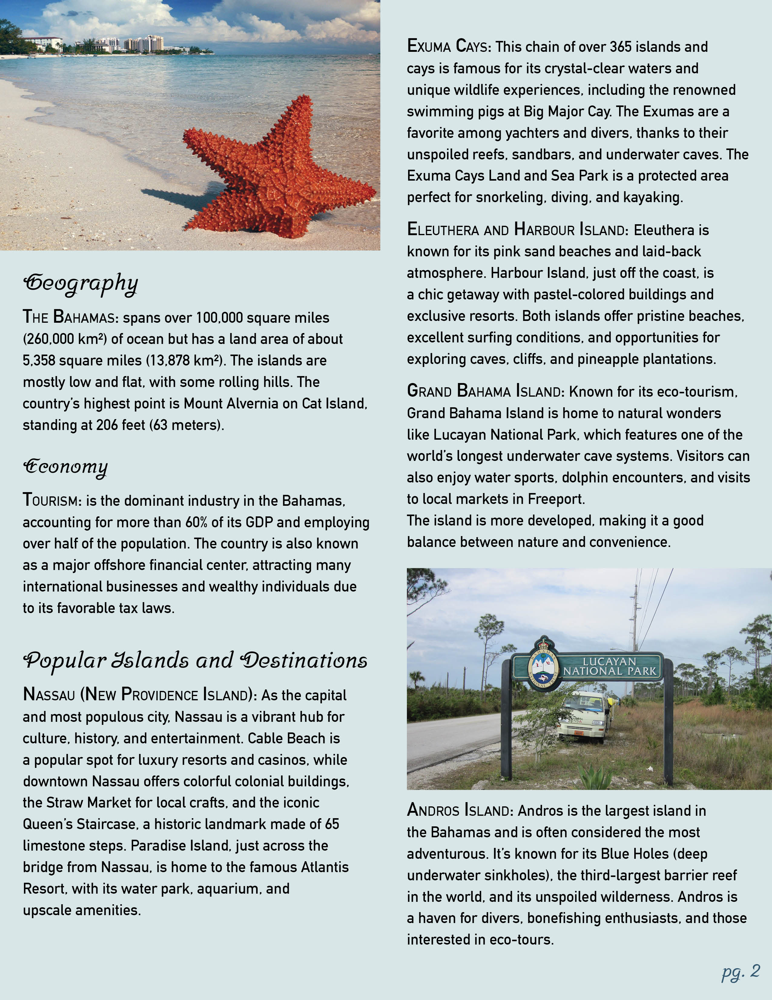

Bahamas Travel Magazine

While learning Adobe InDesign I was tasked with creating a travel magazine spread. I decided I wanted to have it be about the Bahamas. From there I did my research, wrote the content and found images in order to create the full spread. I wanted to keep a consistent color scheme of blues throughout to tie in my images, as well as find a way to emphasize certain text with callouts, dropcaps, and other character and paragraph styles.

